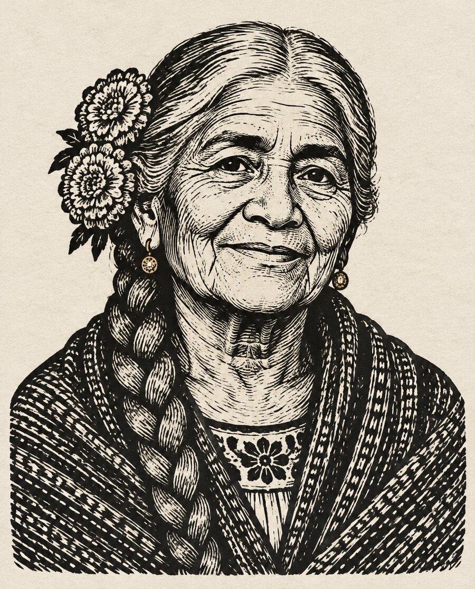

Tell Rosa's ofrenda a story
One memory at a time: something she cooked, said, sang, or did. Say it the way you would tell it at the table.

One memory at a time: something she cooked, said, sang, or did. Say it the way you would tell it at the table.